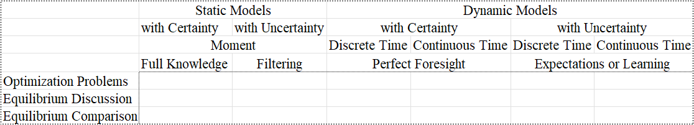

Improving economics teaching and learning for over 5 years.

More Figures

- The lower figure copied from our book "Advanced Macroeconomics Ⅱ: Economic Fluctuations and Monetary Policy" (Postponed).
- The upper figure copied from our working book "Advanced Macroeconomics 0 : Mathematical Fundamentals and Preliminary Analysis" (I acknowledge the financial support from College of WenHua, ZUFE).
More Lectures
Courses on Macroeconomics
"This class will be rigorous, analytical, and theory-based. Familiarity and comfort using multivariable calculus and probability will be extremely useful. Do Not take this class if you feel uncomfortable with math." (Jennifer La'O)
Mathematical Economics Ⅰ&Ⅱ (Autumn, 2021-2023; Spring, 2024)
Stages
- Bachelor (Autumn, 2021-2023) [Regular Class (Autumn, 2021-2023); Enrichment Class (Autumn, 2023)]
- Master (Spring, 2024)
Lecture Notes
- Syllabus of Fundamental Methods of Mathematical Economics
- Syllabus of Principles of Mathematical Economics I
- Syllabus of Advanced Mathematical Economics
- Lecture Notes on Mathematical Economics (Teng Wah Leo)
References
Information Economics (In the plan)
Stochastic Analysis in Macro and Finance (Spring, 2023-2024)
Modules
- Discrete Stochastic Macroeconomic Dynamics (Week1-2, DENG Y-F)
- Elementary Stochastic Calculus for Finance (Week 3-10, JIN Ming)
- Continuous Stochastic Macroeconomic Dynamics (Week11-16, DENG Y-F)
Slides
- Lec0 Stochastic Models vs. Deterministic Models in Macro and Finance
- Lec1 Measure Theory vs. Probability Theory
- Lec2 Random Variables vs. Stochastic Processes (Bayes' Rule vs. Kalman Filter)
- Lec3-4 Stochastic Static Optimization (Brainard, 1967, AER; Morris and Shin, 2002, AER)
- Lec5-6 Stochastic Static Equilibrium (Lucas, 1973, AER; Woodford, 2002)
- Lec7-8 Stochastic Intertemporal Optimization in Discrete Time
- Lec9-10 Stochastic Intertemporal Equilibrium in Discrete Time
- Lec11 Comparative Stochastic Dynamics in Discrete-Time Models
- Lec12-13 Stochastic Intertemporal Optimization in Continuous Time
- Lec14-15 Stochastic Intertemporal Equilibrium in Continuous Time
- Lec16 Comparative Stochastic Dynamics in Continuous-Time Models
References
Advanced Macroeconomics Ⅰ&Ⅱ (Spring, 2019-2024)
Stages
- Bachelor (Spring, 2022)
- Master (Spring, 2019, 2020, 2021, 2022, 2023, 2024)
- PhD Programme (Spring, 2023, 2024)
Slides
- Lec1-2 Review of the AD-AS Model (Classic vs. Keynesian, Sargent, 1987, 2nd; Heijdra, 2017, 3rd)
- Lec3-4 The Solow Model without vs. with Money
- Lec5-6 The Ramsey Model without vs. with Money (Reis, 2007)
- Lec7-8 The OLG Model without vs. with Money
- Lec9-10 A Model with Perf-Infor REs and Norminal Rigidities ([RBC1, RBC2, RBC3, RBC4] vs. [DNK1, DNK2, DNK3, DNK4]; Siyi Sun's class notes on RBC1, DNK1, DNK2; Shuchen Chen's class notes on DNK1)
- Lec11-12 A Model with Perf-Infor REs and Norminal Rigidities (SP vs. SW)
- Lec13-14 A Model with Imperfect-Infor REs or Infor Frictions (SI1 vs. RI1; SI2 vs. RI2)
- Lec15-16 A Model with Bounded Rational Expectations (AL vs. EL)
Exercises
References
Advanced Macroeconomics Ⅲ (In the future)
References
Macroeconomics (Spring, 2023; Autumn, 2023)
Modules
- Local Students (with JIN Ming in Spring 2023)
- Foreign Students (with DONG Xue in Autumn 2023)
Slides
References
Courses on Writing
Literature Reading and Review (Autumn, 2021-2023)
Stages
- Master (Autumn, 2021, 2022, 2023)
- PhD Programme (Autumn, 2023)
References
Elements and Application of LaTeX (Summer, 2019)
References
Courses on Econometrics
Introduction to Econometrics (Maybe next year)
Slides
References
Time Series Analysis (Taught in Autumn 2019, Updated in Spring 2024)
Slides
Lecture Notes
References
Advanced Econometrics (A few years later)
References